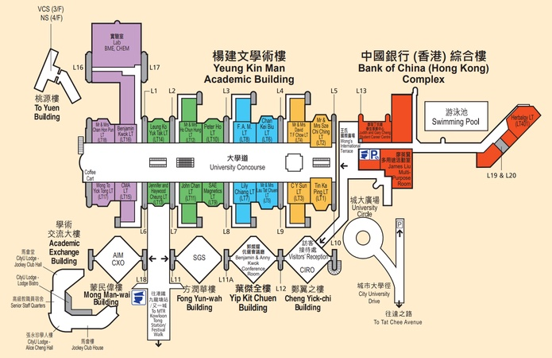

Campus Map: AC1, AC2, AC3 and the Creative Media Centre
Most classes happen in three connected academic buildings. You can walk between them indoors.
The buildings
| Building | Code on your timetable | What's there |
|---|---|---|
| Academic 1 (Yeung Kin Man Academic Building) | YEUNG | Most lecture theatres, the library, canteens |
| Academic 2 (Li Dak Sum Yip Yio Chin Academic Building) | LI | Business school classrooms |
| Academic 3 (Lau Ming Wai Academic Building) | LAU | Newer classrooms and labs |
| Run Run Shaw Creative Media Centre | CMC | School of Creative Media, across Tat Chee Avenue |
The Creative Media Centre is the white, angular building across the road. Use the footbridge to get there. Don't cross Tat Chee Avenue at street level during rush hour.
How to read a room code
A code like YEUNG-P4302 tells you the building (YEUNG), the colour zone (P = purple), the floor (4) and the room. Academic 1 is split into colour zones painted on the walls, so once you know the colour you can follow the signs.

Three tips before semester starts
- Do a dry run. Walk to every classroom on your timetable in the week before term. It takes 30 minutes and saves you from walking into a 200-person lecture late.
- Download the campus map offline. Mobile signal drops in some stairwells and lower floors. CityU has a printable campus map.
- Ask at the info counter. The staff and any senior student will explain the codes in 30 seconds.